주요 과목
종합설계 졸업 프로젝트
3인 팀 졸업 프로젝트에서는 기획·설계·제품 구매·구현·테스트·발표까지 실제 제작을 거쳤습니다. 저는 마이크로프로세서응용에서 익힌 센서 입력과 모터 구동 신호를 바탕으로 장치의 좌우 모터 제어와 회로 구성을 맡았고, 장치에 쓴 탄소강은 기계재료학에서 규격과 물성으로 다시 확인했습니다.
재료및역학실험 24-2학기
인장·굽힘·파괴인성·경도·피로 시험의 원시 데이터(시험기가 기록한 측정값 그대로)를 직접 코드로 처리하고, 국제 시험 규격(ASTM)에 비춰 결과가 유효한지 따져 본 과목입니다.
25-2학기
인공지능 데이터·AI
기말 개인 발표에서 수업 과제로 경진대회 주행 데이터를 써서 차선 인식 모델 3종을 비교했습니다.
공학 문제를 물리 모델과 데이터 기반 모델 두 관점에서 보는 법을 배웠고, 데이터 수집부터 라벨링(정답 표시)·학습·평가까지 한 번 끝까지 거쳐 보며 모델 구조에 따라 결과가 어떻게 달라지는지 비교해 봤습니다.

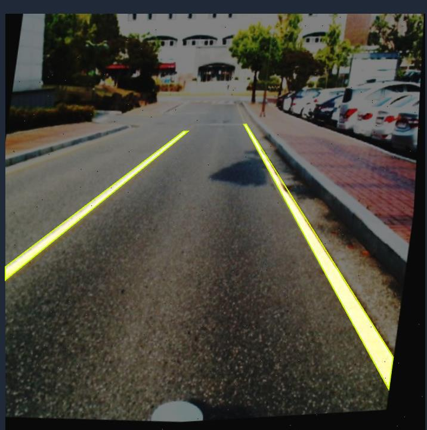

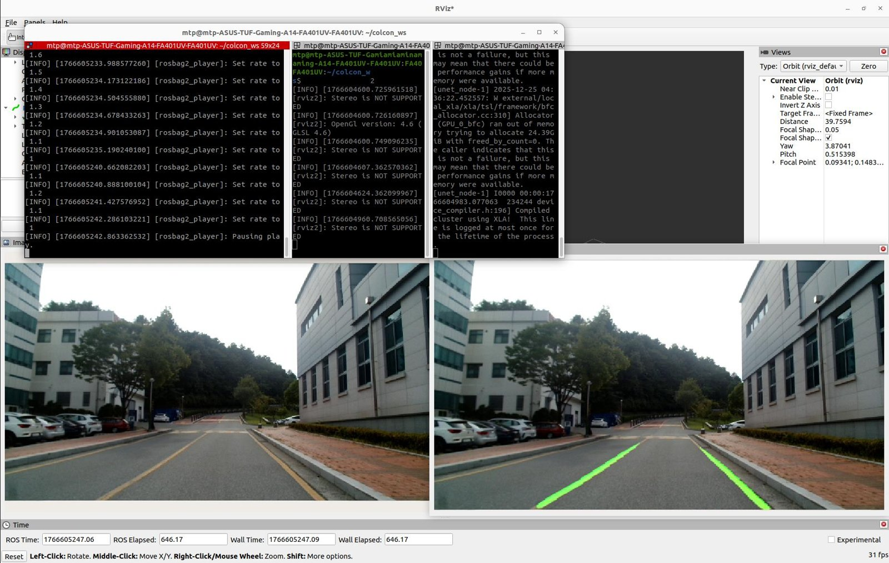
계측공학 계측·제어
3인 조 발표에서 제가 맡은 변형률·응력(원래 길이에 대해 늘어난 비율과, 단면 넓이당 재료 내부에 걸리는 힘) 계측 파트를 정리해 발표하며, 재료역학 이론을 '무엇을 왜 재는가'라는 계측의 목적과 이어서 설명해 봤습니다.
과제로는 LabVIEW(블록을 이어 계측·제어 프로그램을 만드는 그래픽 도구)로, 스위치에 따라 직접 입력한 값과 난수를 바꿔 가며 실시간 차트에 그리는 연습 프로그램을 만들었습니다.

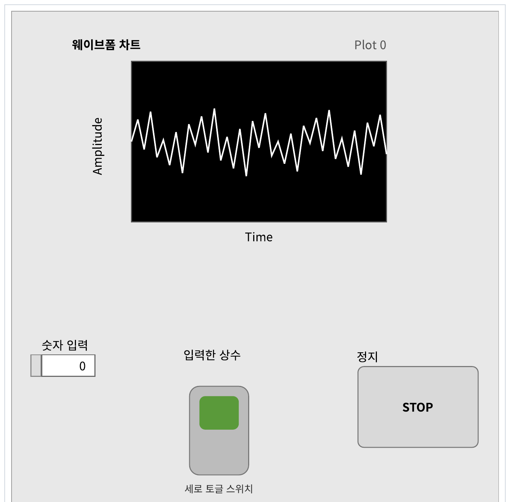

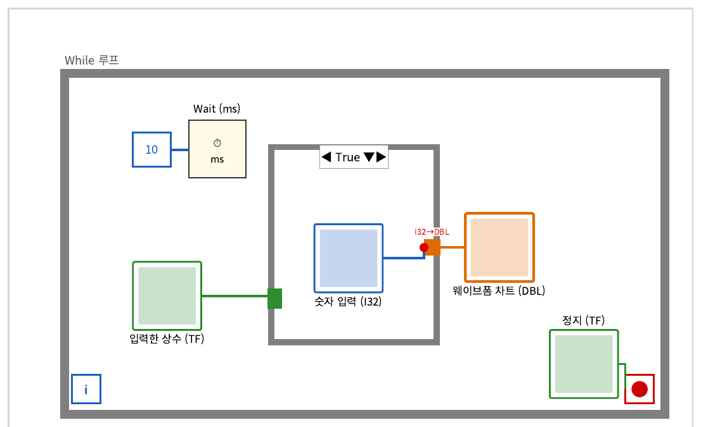
25-1학기
기계재료학 재료·역학
졸업 프로젝트에서 직접 가공해 쓴 탄소강을 리포트 주제로 골라, 규격과 물성표를 찾아 성분·열처리에 따른 특성, 가공성과 비용, 부식·용접 면의 한계를 조사했습니다.
강도·경도뿐 아니라 가공성·비용·부식·접합까지 따져 재료를 고를 때 살펴볼 항목을 정리해 봤고, 설계에 실제로 쓴 재료를 수업에서 다시 공부했습니다.
제출한 리포트 펼쳐 보기

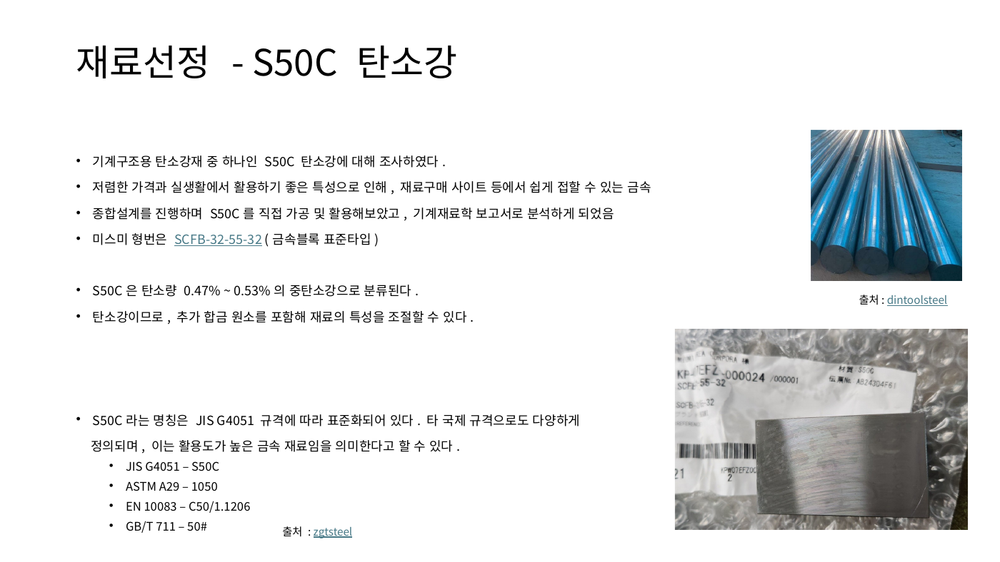

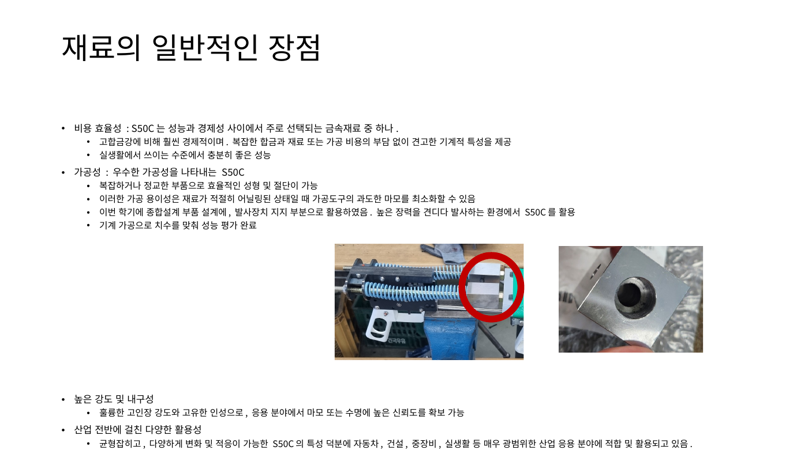
냉동공조 열·공조
열역학과 유체역학을 바탕으로 공기조화 이론과 냉동 사이클을 배우며, 실생활의 에어컨이 어떻게 가동되는지 그 원리를 학습했습니다.
생산품질공학 생산·품질
관리도(공정이 안정적인지 통계로 감시하는 도표)·PDCA(계획-실행-확인-개선을 반복하는 품질 관리 순환) 같은 품질 개념과 통계 기초를 배웠습니다.
24-2학기
재료및역학실험 재료·역학
인장·굽힘·파괴인성(균열이 있는 재료가 버티는 정도)·경도·피로(반복 하중에 의한 파손) 시험에 참여해, 시험기에서 나온 원시 데이터를 Octave·Matlab(수치 계산 프로그램) 스크립트로 직접 그래프로 그리고 물성을 계산해 시험마다 개인 보고서를 썼습니다.
재료역학 이론이 실제 시험에서 어떻게 나타나는지 확인했고, 국제 시험 규격(ASTM)을 참조해 시험 조건과 결과가 유효한지 따지며, 조건을 맞추지 못한 결과도 버리지 않고 이유와 한계를 보고서에 남기는 법을 익혔습니다.

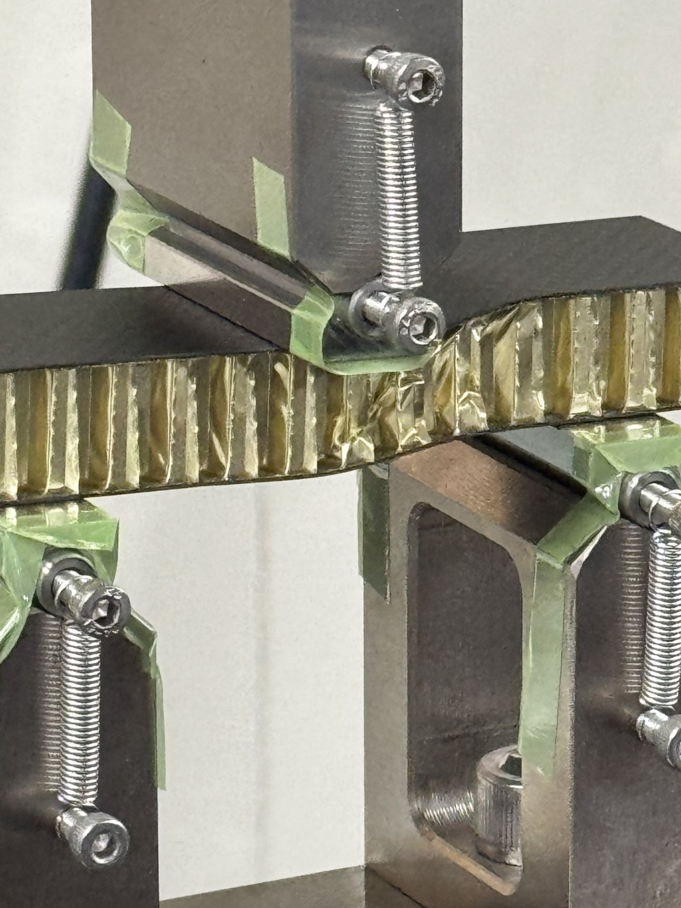

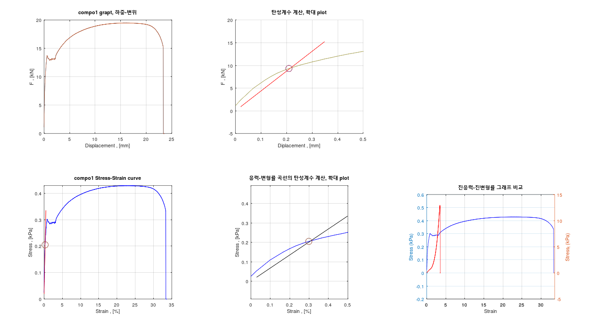

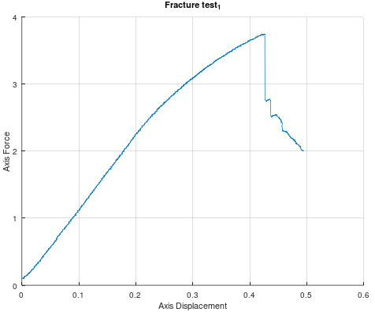

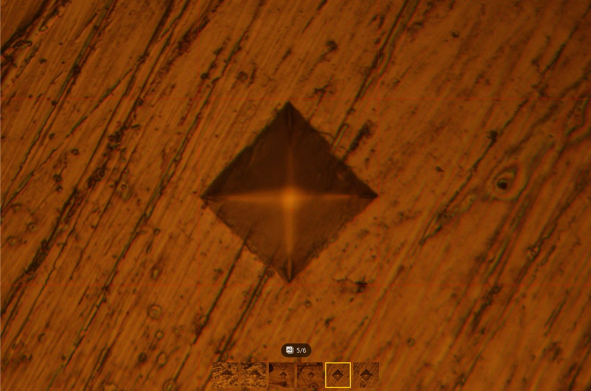

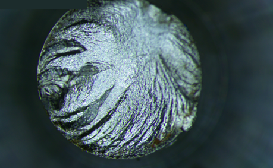
시험 데이터·코드와 보고서에 실은 규격 그림

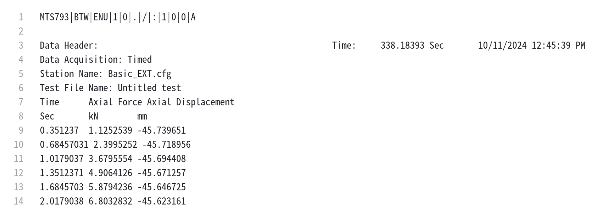

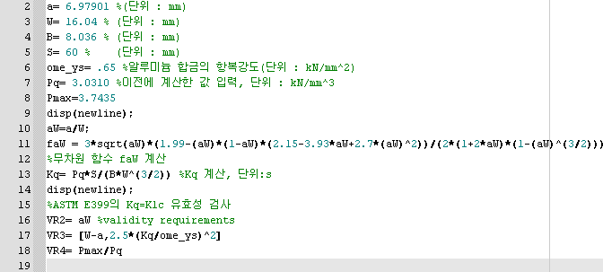

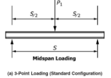

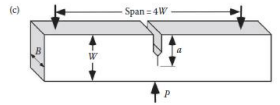
CAD응용 설계·형상
CAD 프로그램이 도형을 옮기고 돌리거나 곡선·곡면을 그릴 때 쓰는 수학을 Octave로 직접 구현하는 과제를 이어서 하며, 동차좌표(이동과 회전을 행렬 곱 하나로 다루는 좌표 표현)로 도형을 이동·회전하고 베지어 곡선(조정점 몇 개로 매끄러운 곡선을 정하는 방식)과 곡면을 그렸습니다.
좌표계를 바꾸는 원리와 조정점·접선 벡터로 곡선·곡면의 형상이 정해지는 원리를 코드로 확인하며, 평소 쓰던 SolidWorks의 기능이 어떤 원리로 돌아가는지 생각해 봤습니다.

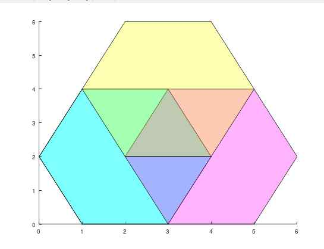

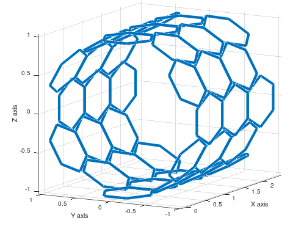

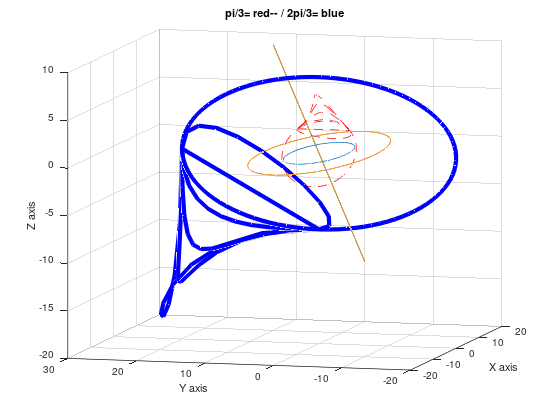

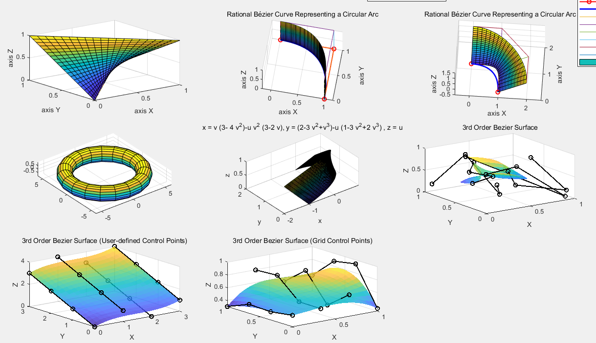

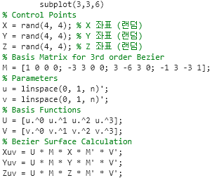
자동차공학 설계·형상
엔진 구조와 연료 분사·과급(터보차저처럼 공기를 눌러 넣어 출력을 높이는 장치), 시동·충전·점화 같은 전기 장치, 클러치·변속기·구동축으로 이어지는 동력 전달 장치, 현가(노면 충격을 흡수하는 장치)·조향·제동 장치, 배출가스 제어와 하이브리드·전기·수소 자동차까지 자동차를 이루는 장치를 계통별로 배웠습니다.
과제로는 차량 한 종을 골라 차체·엔진·동력 전달·성능 제원을 항목별로 나눠 정리했습니다.
24-1학기
마이크로프로세서응용 계측·제어
2인 팀 과제에서 저는 강의 예제 코드를 응용·수정하는 소스코드 작성을 맡아, Arduino(소형 제어 보드)로 가속도 센서 값으로 충격 방향을 표시하는 장치, 기울기에 맞춰 스텝모터로 각도를 유지하는 장치, 적외선 센서로 선을 따라가는 라인트레이서를 구현했습니다.
센서의 아날로그 값을 디지털 값으로 바꿔 읽고 PWM(전압을 켜고 끄는 비율로 모터 세기를 조절하는 신호)으로 모터를 구동하는 법을 익혔고, 엔코더(모터 회전을 재는 센서)로 잰 속도를 목표와 비교해 계속 보정하는 폐루프 제어를 강의 예제로 확인해 봤습니다.

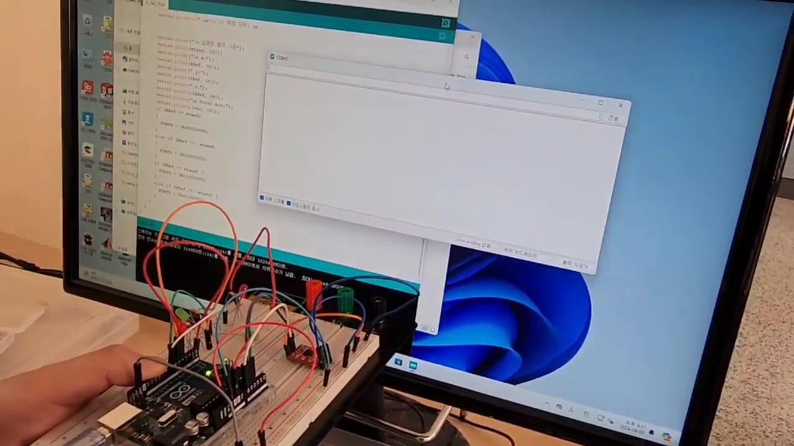

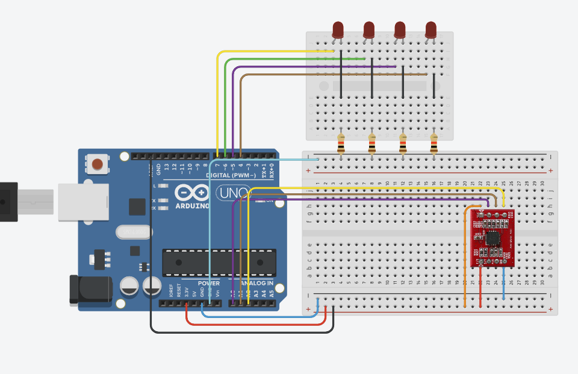

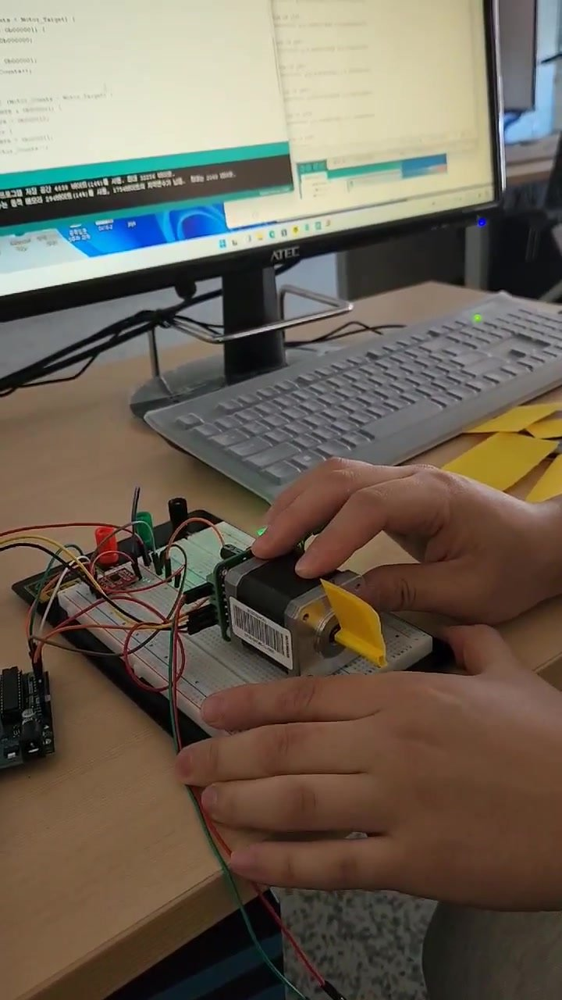

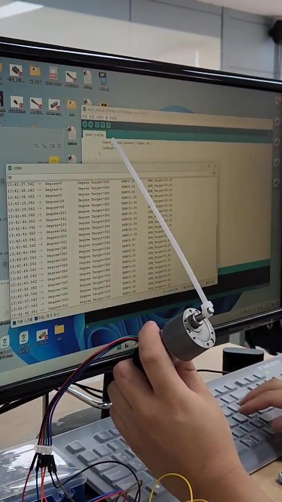

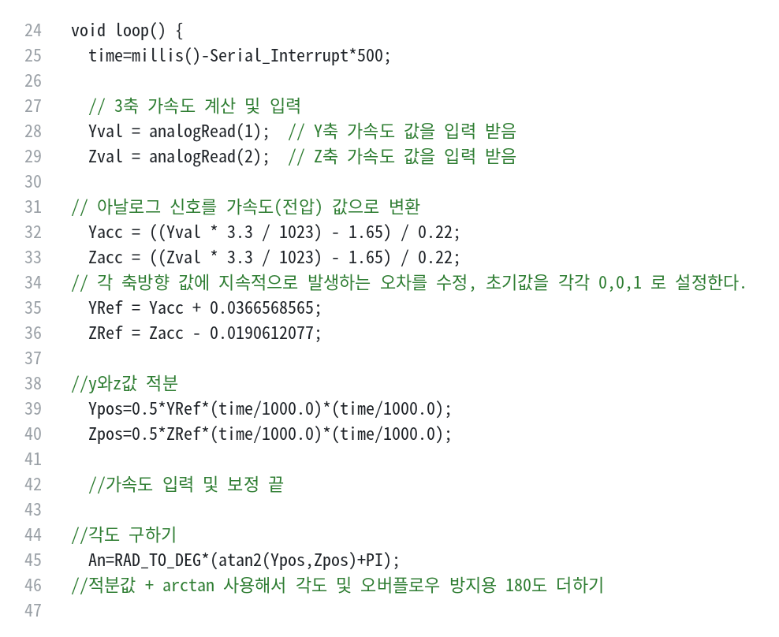
23-2학기
기계공작실습 제조·생산 · 기계공작법·기계재료학과 연계
2인 조로 밀링(회전하는 공구로 평면·홈·구멍을 깎는 가공)·용접·선반(공작물을 돌리며 원통 형상을 깎는 가공) 실습을 하며, 도면을 해석해 가공 순서를 세우고 금속을 직접 깎고 이어 붙여 주차마다 보고서를 썼습니다.
측정기구 영점과 측정 자세, 절삭유(가공 중 공구를 식히고 마찰을 줄이는 기름)·칩(깎여 나온 금속 부스러기) 정리처럼 정밀도와 안전을 지키는 현장 습관을 익혔고, 공차(허용되는 치수 오차 범위) 안으로 가공하도록 목표 치수를 잡는 법과 용접 상태를 보고 전류 세기를 조절하는 법을 보고서에 정리했습니다.
기계공작법·기계재료학에서 배운 가공 공정과 금속 재료의 원리가 이 실습의 바탕이 됐습니다.
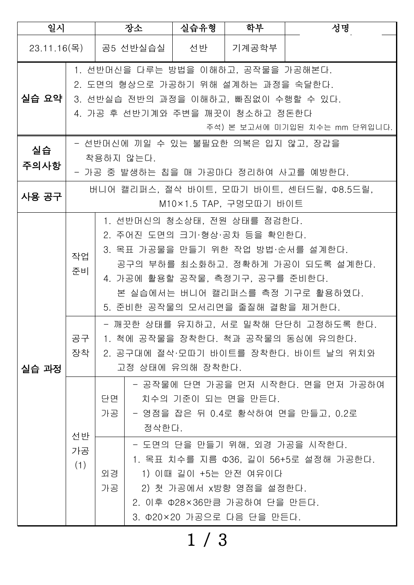